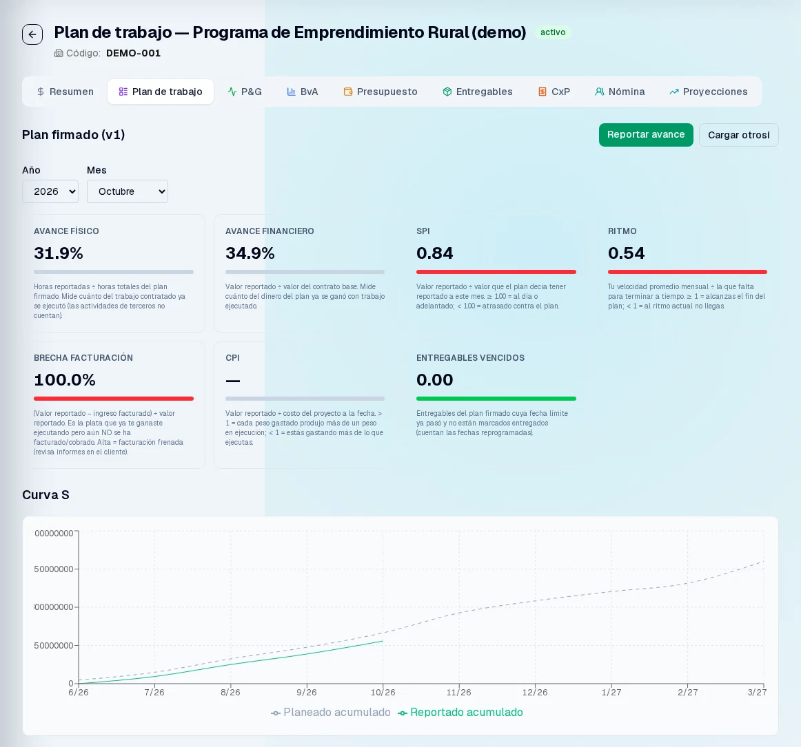

Análisis financiero
Transformo información contable y financiera en análisis para apoyar decisiones.
PORTAFOLIO / FINANZAS + INTELIGENCIA ARTIFICIAL
Soy Jhon Camilo Vásquez, contador público y analista financiero. Ayudo a convertir datos en información confiable y procesos complejos en soluciones prácticas que facilitan el análisis y la toma de decisiones.

ANÁLISIS · DATOS · AUTOMATIZACIÓN
Transformo información contable y financiera en análisis para apoyar decisiones.
Organizo, limpio y conecto datos para construir reportes confiables.
Diseño soluciones que reducen tareas manuales, incorporando IA cuando aporta valor.
01 / PROYECTOS SELECCIONADOS
Casos con contexto, decisiones de diseño y resultados reportados. Sin métricas de impacto inventadas.
02 / MÉTODO DE TRABAJO
Defino qué debe funcionar, cómo comprobarlo y cuándo detener el flujo. Después construyo.
Seguridad, rendimiento y mantenibilidad se revisan por separado. Si falta un informe, el orquestador bloquea el cambio.
03 / PRODUCTO EN PANTALLA
Muestras de interfaz. Los valores financieros son datos de demostración, no resultados de clientes. Capturas originales en español.
04 / PERFIL
Combino mi experiencia contable y financiera con herramientas como SQL, Power Query, Excel, Power BI y Python. Cada proyecto comienza con un diagnóstico: analizo el problema, reviso y limpio los datos y, a partir de esa base, defino la solución más adecuada. Cuando aporta valor, incorporo distintos modelos de inteligencia artificial para potenciar el análisis y la automatización.
Evidencia en agentes con Claude, Python y APIs, dashboards propios y automatización operativa. Inglés B1 técnico.
Microsoft Copilot y Power BI: herramientas por adoptar; no se presentan como experiencia demostrada.
UN PERFIL. UNA FORMA DE CONSTRUIR.